Советы
Chevrolet Bolt EV
Полный справочник владельца электромобиля. Термины, обслуживание, зарядка, ремонт и многое другое.
📖Термины
SOC - State of charge. Текущий уровень заряда батареи в процентах
SOH - (State Of Health, %) – показатель, использующийся для оценки состояния батареи. На русском языке может звучать, как: степень работоспособности аккумулятора. Обозначает его остаточную емкость, измеряется в %, т.к. изначально SOH любого электромобиля равен 100%. НЕ имеет единой формулы исчисления и пороговой величины, после прохождения которой аккумулятор будет считаться нерабочим – все индивидуально и зависит от конкретного разработчика.
Следует также отличать его от «запаса хода» (дистанция, которую машина может проехать на выдаваемых кВтч), который постоянно меняется в зависимости от уровня заряда, рельефа местности, использования вспомогательных систем, стиля вождения, количества пассажиров и веса перевозимого груза.
EV - Electric vehicle
РЕГЕНЕРАТИВНОЕ ТОРМОЖЕНИЕ - Система, используемая в электромобилях, которая восстанавливает энергию, она в противном случае теряется во время замедления и торможения, тогда система отправляет ее обратно в аккумуляторную батарею, чтобы помочь поддерживать заряд. Электромобили, такие как Chevrolet Bolt EV, могут максимизировать эффект рекуперативного торможения, чтобы замедлить - и даже полностью остановить автомобиль - без использования тормозов. Это называется «вождение одной педалью».
Антипригарка - прошивка Bolt ограничивающая заряд батареи для предотвращения возгорания
HillTop - функция для ограничения зарядки. При включении эта функция ограничивает заряд во время зарядки аккумулятора, делая резерв для энергии от рекуперативного торможения. Эта функция также интегрируется с функцией зарядки на основе местоположения, что позволяет настроить систему таким образом, чтобы она включалась, когда вы находитесь дома (On - Home Only) или в дороге (On - только в гостях)
⚡Разное (коротко)
✿ В машине есть очень хорошая система терморегулирования, в том числе неплохая система охлаждения, которая использует кондиционер автомобиля. Существует система жидкостного охлаждения, которая неплохо справляется с поддержанием оптимального температурного режима батареи для максимального срока службы.
✿ Фактически, даже болты с большим пробегом (100 тыс. + Миль) демонстрируют очень минимальную деградацию в максимальном диапазоне 5-10%.
✿ Bolt 2020 г.в. (модельный год) имеет немного большую батарею - 66 кВтч
✿ У Bolt 2022 похоже, что добавили буфер на 1 кВтч. Доступно только 65 кВт / ч.
✿ В 2018 модельном году добавлен телескопический солнцезащитный козырек (который можно установить в 2017 модельный год), а обогрев рулевого колеса может включаться автоматически.
✿ батарея 2017-2019 на самом деле составляет 57 кВтч, но при нормальном использовании мы можем получить ~ 60 кВтч.
✿ В 2022 есть встроенная зарядка Qi и функция Wireless CarPlay.
✿ В 2020 были добавлены HD-камеры, однако вы не можете использовать их на более старых моделях.
✿ Предупреждения о низком уровне жидкости для омывателя ветрового стекла нет.
✿ Если вам нужно запитать свой дом (или что-то еще), приобретите качественный синусоидальный инвертор (в идеале) мощностью 2000 Вт + непрерывной мощности и подключите его напрямую к клеммам аккумулятора 12 В. Bolt может обеспечить постоянную мощность 130 А или около 1600 Вт в системе 12 В от основного тягового аккумулятора. Это означает, что постоянная выходная мощность переменного тока составляет около 1400 Вт. Короткие нагрузки выше этого допустимы.
Если вам нужно проработать более 1-2 часов (когда Bolt автоматически выключится), включите автомобиль, включите стояночный тормоз, переключитесь на нейтраль и выйдите через пассажирскую дверь.
🔍Опель Ампера-е vs Chevrolet Bolt
ОПТИКА
- В опеле есть ручной корректор
- В опеле нет боковых жёлтых повторителей габаритов, соответственно нет боковых диодных габаритов
- Оптика в заднем бампере в опеле, это противотуманные фонари, и задний ход одна лампа. Есть кнопка вкл зад. птф.
ЗЕРКАЛА
- Стекла сферические с обеих сторон, с пассажирской стороны нет надписи
- В опеле зеркала складываются с кнопки.
КУЗОВ
- В опеле передняя решетка рельефная.
- В опеле европорты с завода
- Штатная зарядка в опеле полностью соответствует нашим стандартам, без переделок
- В опеле чуть другое расположение предохранителей под капотом
- В опеле блокируется даже штатный пистолет зарядки, разблокировать можно кнопкой на ключе или на большом экране.
САЛОН - КОМФОРТ
- В опеле в меню есть по умолчанию русский язык, четные волны
- В опеле в отличии от шевроле, только две камеры, задняя и в лобовом, кругового обзора не бывает
- В опеле есть датчик дождя
- В опеле есть кнопка на руле ограничения скорости
- В опеле парктроники в круг, есть автопарковка, задействованы кнопки под большим монитором
- В опеле не бывает нижней жёсткой полки в багажнике, как и креплений. (Пишут что есть как доп. опция)
- Ключи внешне абсолютно разные
- В Опеле камера 360, как опция за отдельную плату
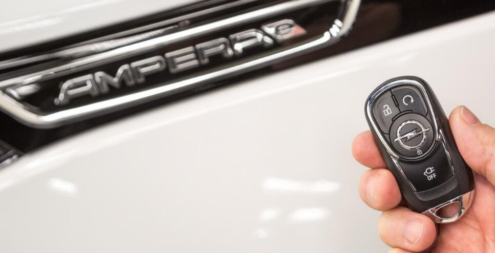
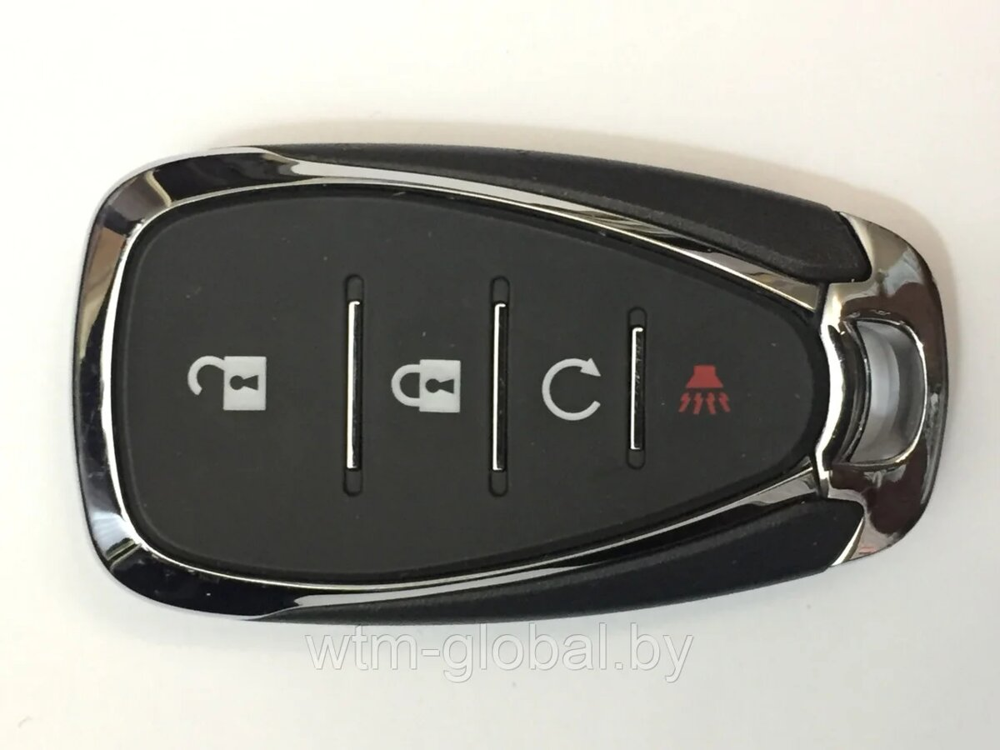
Разница в скорости стандартной зарядки Bolt 8А/12А на шевроле и 6А/10А на опеле
В остальном, абсолютно одинаковые машины
📋Инструкции
Различные инструкции (англ): https://allev.info/2020/02/chevy-bolt-most-frequently-asked-questions/
Русская кривая: https://drive.google.com/file/d/1Rpj8Pf-UXJazhzd5efhcn-YdODuj8pZ8/view
Bolt EV Service Manual 2017-2019 (сервисная инструкция): https://drive.google.com/file/d/1eZawZRS1c3m7dLvHKuv3AWbXhLbp4s62/view
🔧Регламент ТО, интервалы и тех. обслуживание
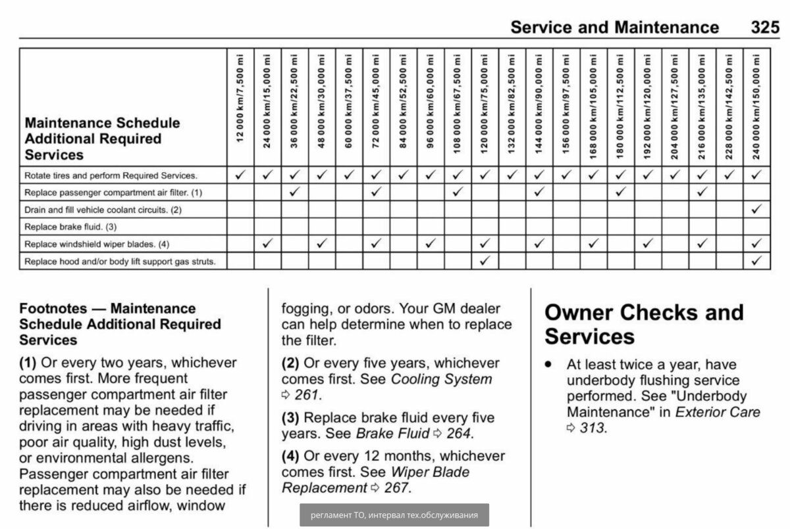
📱Комплектация BOLT через чтение QR кода на стойке водителя
Чтобы прочитать коды комплектации нужно отсканировать большой QR-код на водительской стойке. Там будет длинный текст, где через пробелы разные коды.
Ниже есть PDF где можно найти большинство из них: Коды из расшифровки
💬Группы/чаты в интернете
- Сообщество в МАКС: ссылка
- Англоязычный FAQ: ссылка
- Шевроле Болт BY (viber 465 участников): ссылка
- Chevrolet BOLT ФОРУМ (Телеграм 2080 участников): ссылка
- ChevyBolt (Телеграм 980 участников): ссылка
- Электромобиль Беларусь (viber 1014 участников): ссылка
- DRIVE2.RU: ссылка
- Chevrolet BOLT РФ: ссылка
- BOLT_RF_запчасти: ссылка
📋Проверка автомобиля на отзыв производителя
🔍Где найти серийный номер батареи
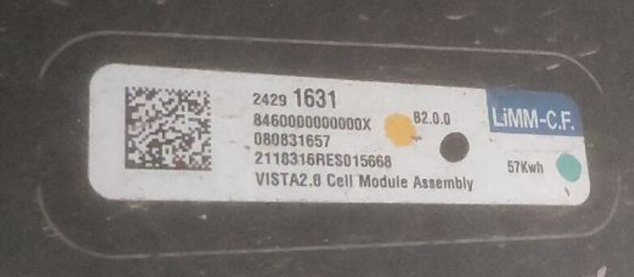
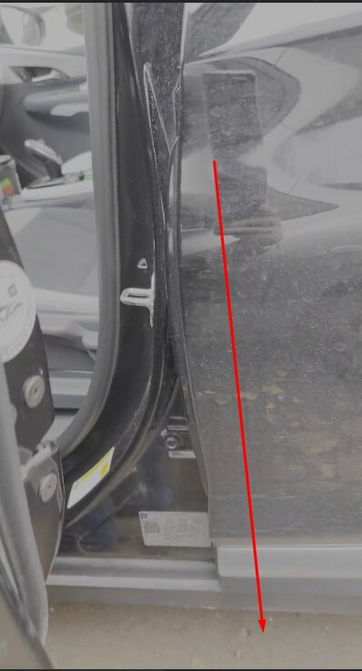
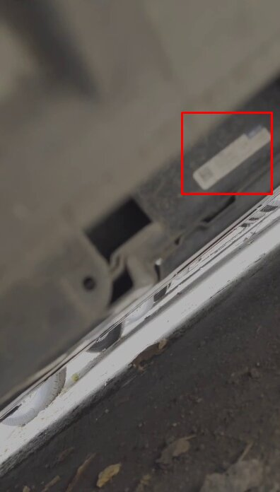
🛞Резина
✿ У Bolt большой крутящий момент, поэтому, если у вас тяжелая нога, вы быстро изнашиваете передние колеса. Вот почему так важно выполнять ротацию шин по расписанию.
Размер шин (оригинал) 215/50/R17
Диски оригинал 6.5j×17 ET44 5×105
215/55 r17 - На выворачивании будет затирать
- Вылет диска 44 - сток для 17 дисков, 39 - протестировано и подходит для 16 дисков https://t.me/boltchevrolet/37297
- У меня не затирает. И арки подшумлены. Но зазор не большой https://t.me/boltchevrolet/37952
- при ширине диска 7J вылет надо 39-42
- Вчера купил 16е диски себе на зиму от опеля астры чтоли круглой, 6.5J×16 5/105 ET39 d56.6 Резина размеры 205/60R16. Все стало как родное. Единственный момент, при выборе дисков смотрите чтобы спицы не задевали за суппорт.
- Поставил R16 ET38 6.5J×16 5/105 d56.6 с зимней резиной 205/60/16 все стало отлично. Диски искал от опеля.
- Сегодня поставил 7х17, вылет 42, нормально (резина стандартный размер)
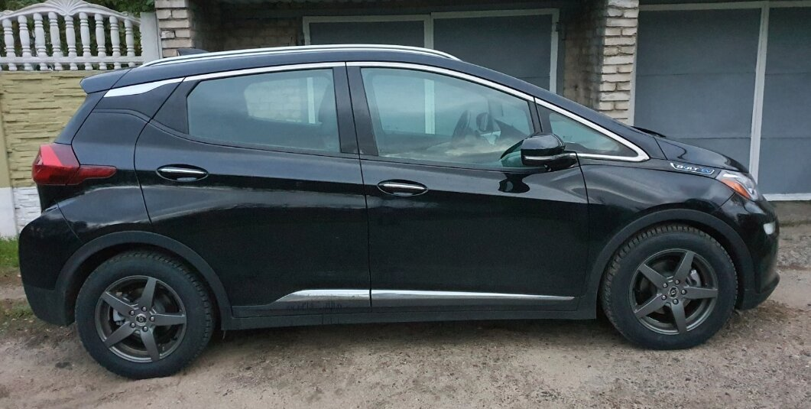
Диски 16": Onliner | Яндекс | Autoset
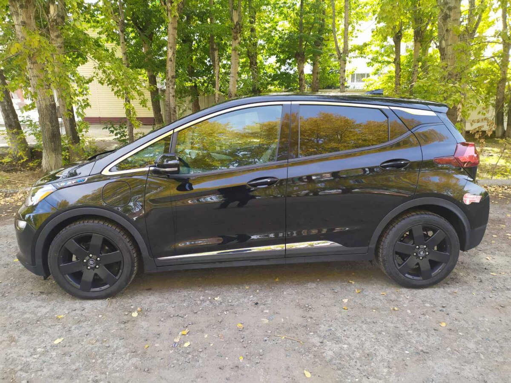
📡Датчики в колеса
Болт 315 мГц
Ampera-e на 433 мГц
Оригинал ACDelco 13598772 GM Original Equipment Tire Pressure Monitoring System (TPMS). Батарейки хватает на лет 5.
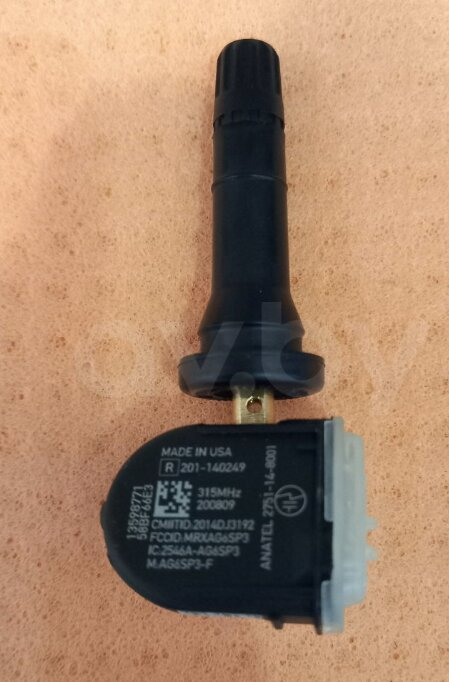
С китайскими большое кол-во брака. Нужно покупать с запасом на случай брака и перед установкой проверять
Вентиль резиновый для датчика артикул - top5623904
📐Проставки
Проставки 25 перед, 20 зад
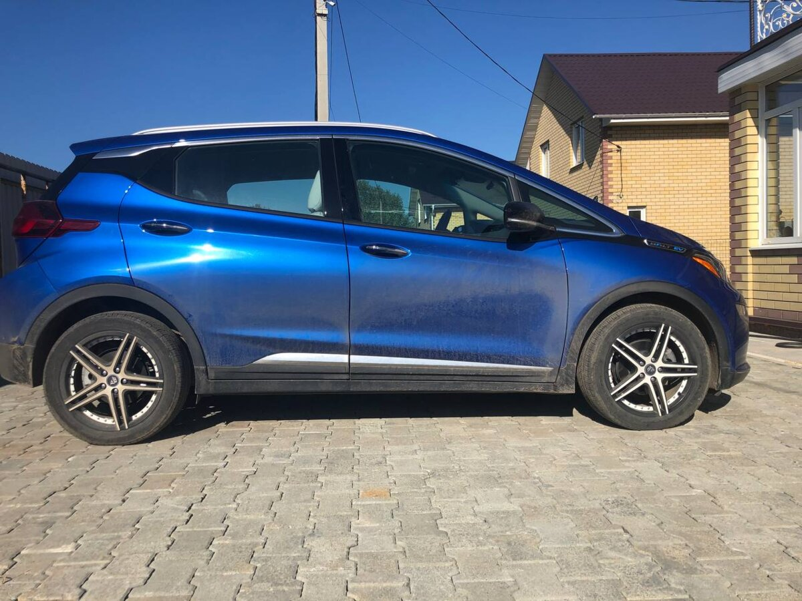
🚗Оригинальные брызговики
Их не существует
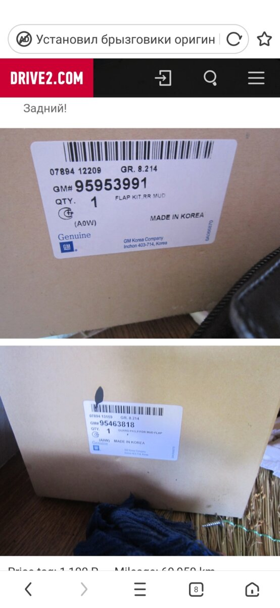
⚙️Прошивка колес
- Входим в сервисный режим (Удерживать Start без тормоза на 5+ сек)
- Выбираете пункт меню на руле, где указано давление колес, нажимаете на руле галочку (типа ОК, которая). Машина спрашивает, действительно ли хотите перепривязать датчики?
- Выбираете да, машина сигналит и зажигает левый передний поворотник.
- Идете с прибором к левому переднему колесу и пробуете его привязать - тыкаете антенной прибора в место соединения ниппеля и диска, либо в резину сразу за диском, на уровне ниппеля. Пробуйте нажимать и держать кнопку.
- Обычно нужно несколько попыток, пробуйте, пока машина не выключит левый передний поворотник. Если удастся, она посигналить и зажжёт правый передний поворотник. Если не удалось, и поворотник погас, начинайте процесс снова.
- Обычно самый большой геморрой именно с первым колесом, как только удастся с ним, все остальные привязываются с первого касания, но может это только у меня так
- Выключаем авто. Если сразу поехать, то привязка потеряется
📐Развал схождение (пример)
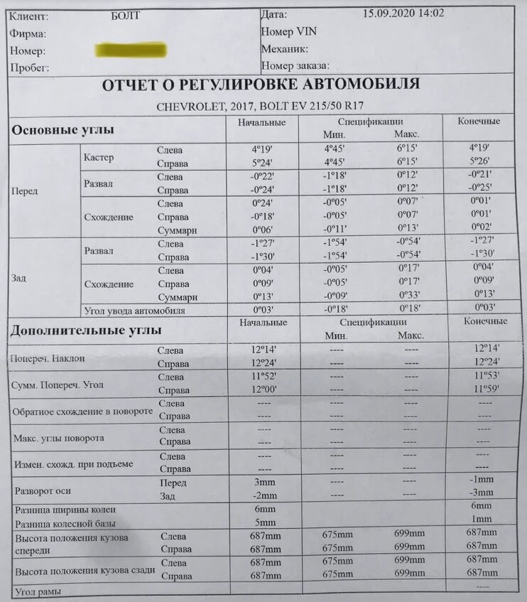
🧰Что нужно из важного с собой в Болте
- ✿ Ключ на 10 для снятия аккума
- ✿ Если нет запаски, жижа для колес
- ✿ Трос и крюк для буксировки
🚨Сигнализации
Pandora - ребята не могли ничего установить, т.к. цитата: "Твоя Пандора срёт в кан шину и сбрасывает апдейт при опросе блоков". В итоге тупо вырвали её, а болту даже легче стало.
https://t.me/boltchevrolet/37960
📲ПО на телефон
MyChevrolet программа для Android
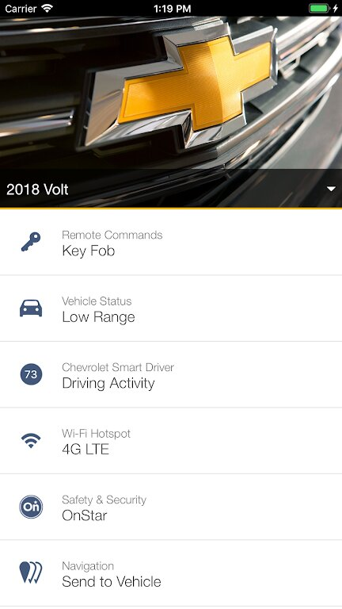
Не обновляем! Входим без регистрации (кнопка на англ - войти без регистрации)
Скачать APK: https://drive.google.com/file/d/1Nn9-wTQK9JG_gqN0dH5K7Yq9M995peYh/view
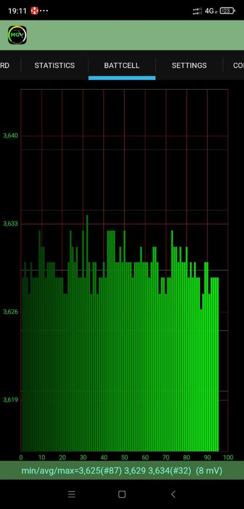
MyGreenVolt
https://play.google.com/store/apps/details?id=net.MyGreenVolt&hl=ru&gl=US
функционал графика ячеек платный (1$+)
Torque Pro
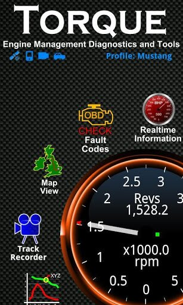
✿ ссылка на скачивание PRO - https://4pda.to/forum/index.php?showtopic=193433 (нужна регистрация)
✿ PIDы на 2017-2018 год - Ссылка
✿ PIDы на 2019-2020 год - Ссылка
🌬️Салонный фильтр
Оригинальный партнамбер - 13356914
Наш фильтр высотой 30мм.
FP 24 003
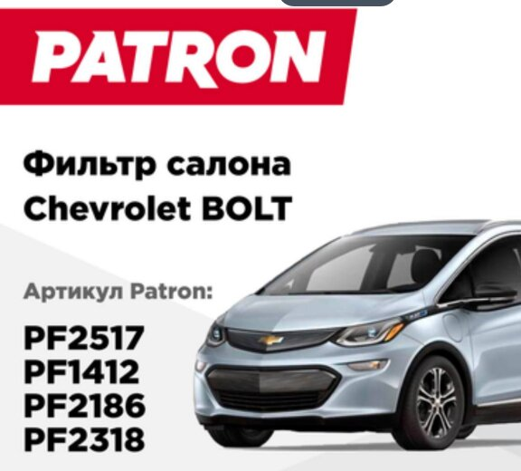
Поставил фильтр MANN, по их каталогу номер FP 24 003. Антибактериальный и угольный. Плотненько встал. Покатался по пробкам - запаха нет. Кайф. Посмотрим как долго не будет.
Отчет о фильтре Mann для Болта.
Куплен был почти самый дорогой из доступных на рынке фильтров салона - Mann
Цель была проверить на сколько комфорт с новым фильтром будет лучше чем с дешевым. Интересовала фильтрация запахов впереди идущих фур и прочих токсичных вонючек.
Цена фильтра Mann в польше – около 150 злотых (ок 80 руб), дешевые фильтры угольные начинаются злотых от 20-30 (ок 15 руб). То есть разница почти в 5 раз.
Фильтр установлен был в начале декабря. После 2 месяцев езды он «закончился» - стали заполевать стекла и пришлось включать обдув на стекло. На дешевом я ездил до полугода и ничего не происходило.
Запахи действительно пропали. Я вообще перестал дергаться и включать внутреннюю циркуляцию когда впереди что-то коптящее появлялось. Вообще нет проблем с запахами с улицы.
Итого – минус цена и быстрый износ. Плюс – комфорт и здоровье.
Заменил фильтр на антибактериальный, встал отлично, как родной. FC907NY
🌧️Дворники на BOLT
A101S
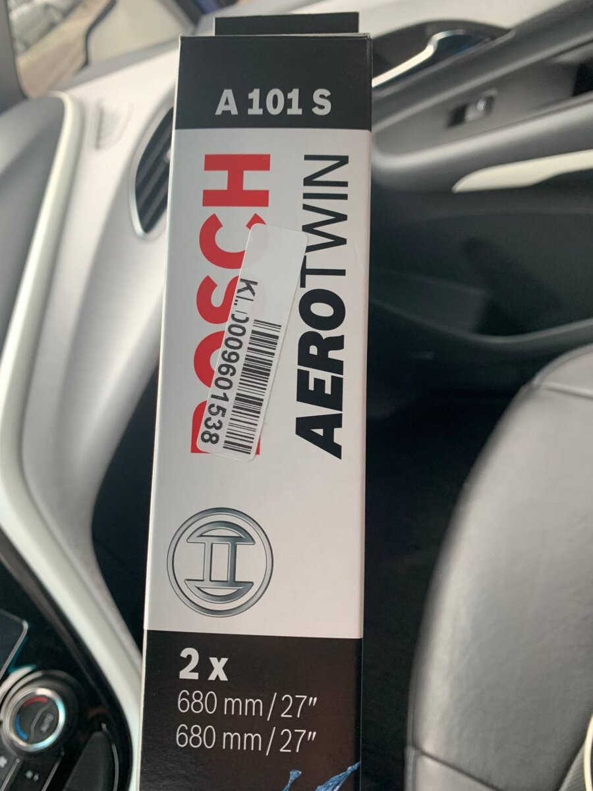
🛢️Масло в редуктор
ACDelco dextron HP
Или mobil lv hp (остерегайтесь подделок)
Рекомендуем поменять масло на 100.000 км
Объем 2.6 л
🔋Аккумулятор (малый)
✿ Покупать только желательно AGM. Обычный будет быстро сдыхать, но в наличии нет в Украине (ставим обычный)
Размер оригинального АКБ 207×175×190 (ДхВхШ) 50Ah
ACDelco LN1AGM: https://t.me/chevybolt/39572
✿ Если вы видите сообщение «Battery Saver Active», это означает, что ваш аккумулятор на 12 В разряжен. Если вы видите это часто или немного проехали, вам, вероятно, нужно заменить 12 В. Известно, что они портятся всего за 1 год. Обычно батареи на 12 В служат только 3-5 лет, так что вы можете рассчитывать на их замену.
✿ Можно купить на Ali прикуриватель, удобно если вдруг сядет малый аккум
💡Фары
Ксенон на американском Болте - D3S
Блок розжига:
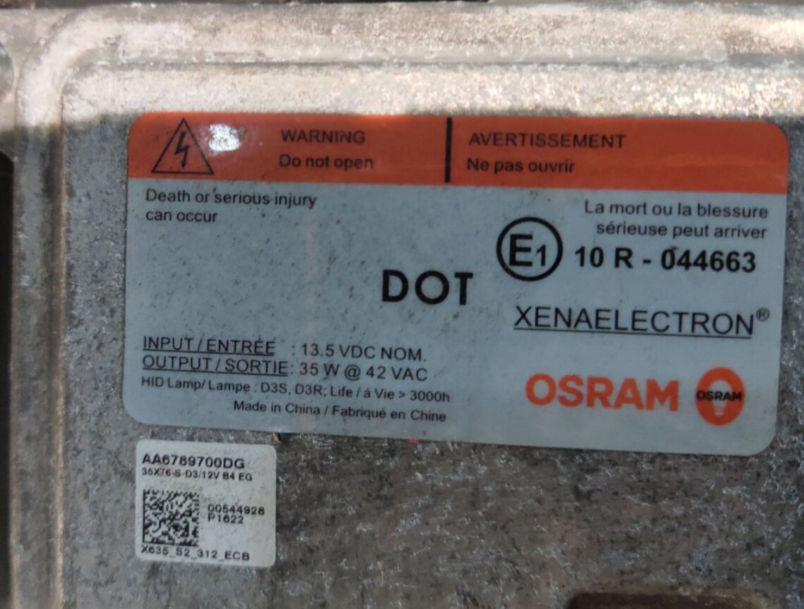
Линзы Aozoom A6: https://t.me/boltchevrolet/84490
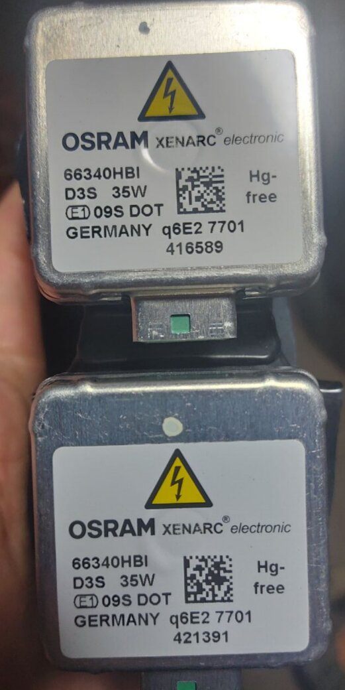
внешний вид фары не изменился
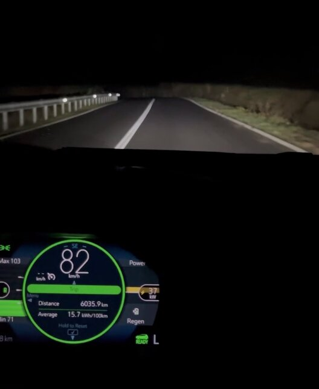
🏠Как подключить к болту дом
Нужен Инвертор на 1000 - 2000w
Подключить на обычный акб, запитать дом чтоб было потребление а потом завести авто
Заводить нужно, чтобы он смог его заряжать. В идеале включить режим мойки.
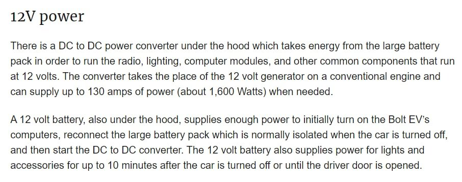
Холодильник на старте берет пиковые мощности:
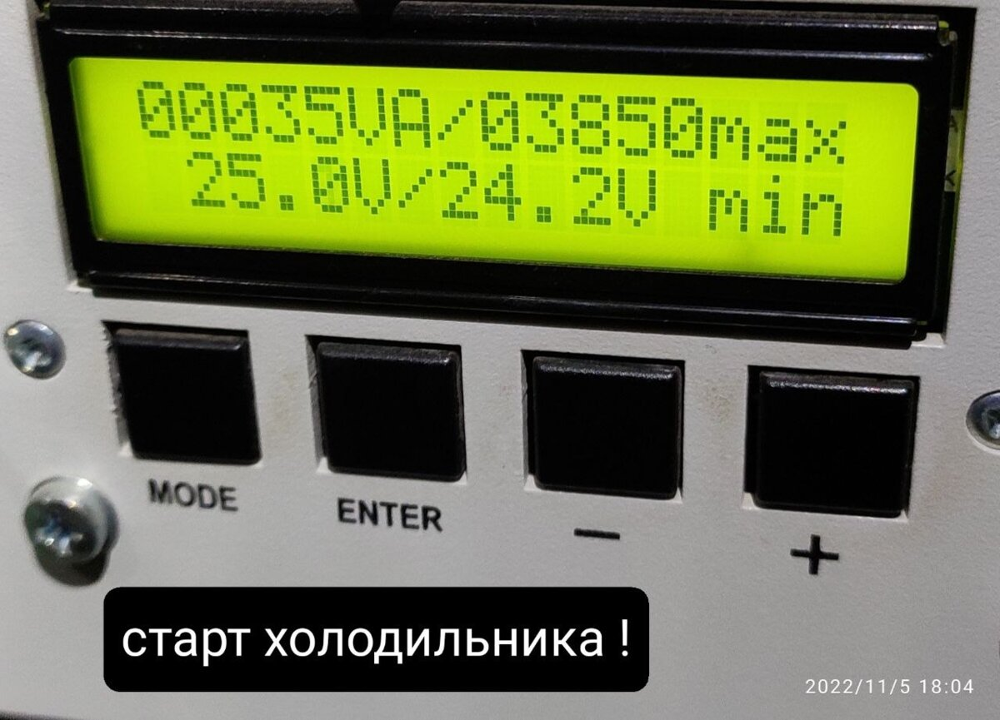
🚿Режим Мойки
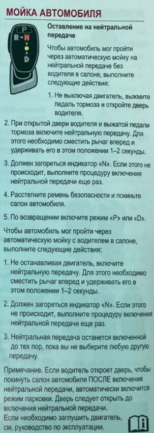
🔑Как поменять в ключе батарейку
CR 2032
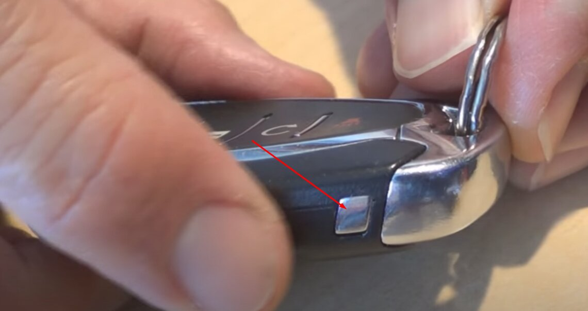
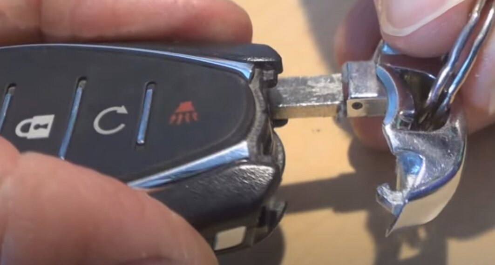
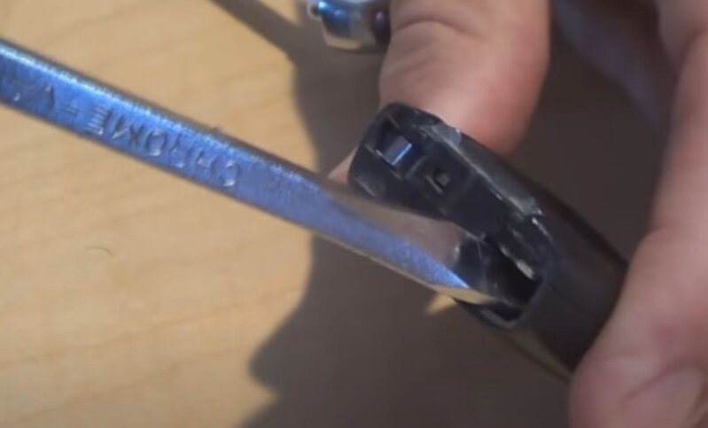
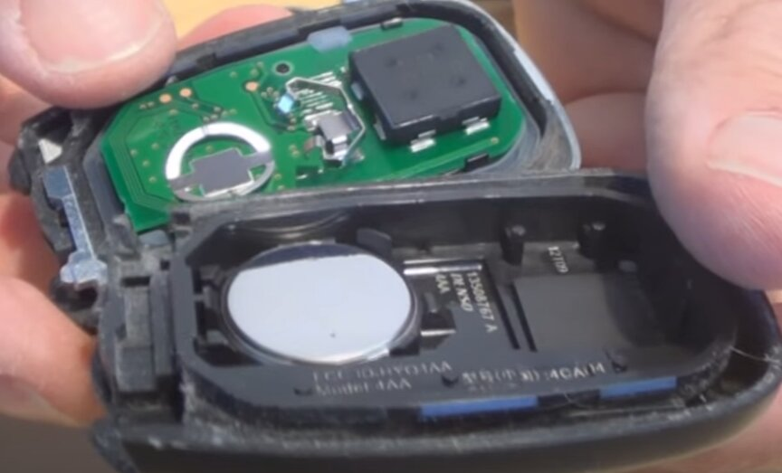
⚙️Алгоритм перевода Болта в Нейтраль
Постановка на НЕЙТРАЛЬ: включить зажигание, нажать тормоз и не отпуская педаль, открыть дверь, не закрывая дверь, перевести в нейтраль, выключить авто. Покинуть салон, закрыть дверь.
🔩Стойки стабилизатора
Стойки стабилизатора подходят от тойота королла 02, авенсис 03, ниссан жук 2010, OEM Number: 4882002030 N4252
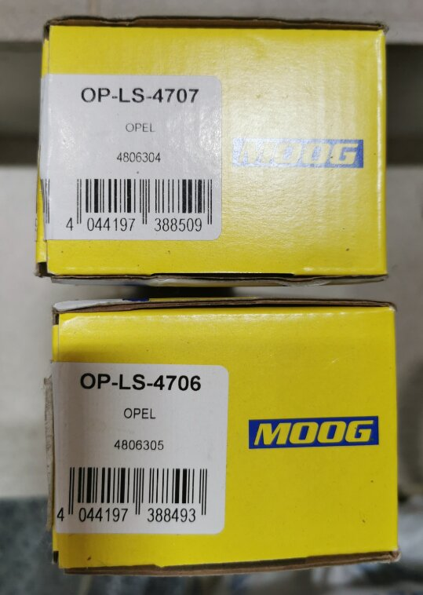
🔌Зарядки
Типы зарядок (описание)
Обычно Болты переделывают под европейский быстрый порт CCS
Где смотреть зарядки?
Все страны
приложение Plugshare (после санкций работает только через прокси)
https://apps.apple.com/us/app/plugshare/id421788217
https://play.google.com/store/apps/details?id=com.xatori.Plugshare
Очень удобная зарядка Energy Star Pro
- может работать без заземления
- есть свой WiFi (через него можно управлять всеми параметрами включая током заряда, и даже отключение после заряда. Удобно если ее повесить в свой ящик на улице)
Инструкция к Energy Star 32 Pro: Ссылка
Электрозарядки в РБ
Маланка: https://malankabn.by/
Быстрая зарядка 0.39 BYN / Квт
Обычная 0.29 BYN / Квт
Минимальное напряжение для зарядки болта от 220в
В чатах пишут, что работает от 165в
Как определить наличие быстрой зарядки в Болте?
Картинка 1 - без быстрой зарядке (нет проводов, и черная не съемная заглушка)
Картинка 2 - есть быстрая зарядка (два кабеля, съемная заглушка (под ней доп разъем))
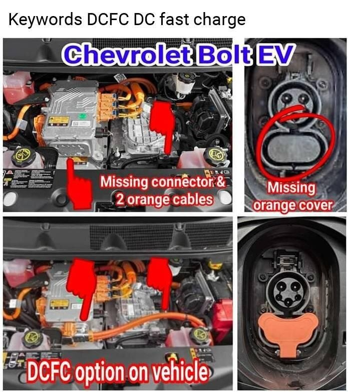
Установка зарядки на своем машиноместе в паркинге
- Получить тех. условия (инженер ЖЭС/ТС, за подписью председателя/директора).
- Сделать проект.
- Согласовать с членами ТС(2/3 голосов). Для ЖЭС скорее всего не требуется
- Установить ящик со счетчиком согласно проекту (требуется интеграция с АСКУЭ, т.е. счетчик с модемом).
- Согласовать с Энергонадзор
- Согласовать с Энергосбыт
- Заключить договор с Энергосбыт
- Параметризовать счетчик (энергосбыт)
Самостоятельное согласование увеличивает сроки в Х раз. Лучше просить об этом проектировщика.
https://auto.onliner.by/2021/05/26/opyt-ustanovki-zaryadnoj-stancii
https://autokadabra.ru/shouts/104243
Быстрая зарядка
✿ Болты 2017-2019 модельного года не любят быструю зарядку в холодном состоянии, поэтому они будут заряжаться медленно, пока аккумулятор не нагреется до полной температуры 15C.
✿ Точно так же в очень жаркую погоду он снижает скорость заряда, если становится слишком жарко
✿ Быстрая зарядка игнорирует ограничения по времени суток, а также ограничения по лимитам заряда.
✿ Bolts 2017-2019 требуется около 1 часа, чтобы зарядиться с 10 до 70% при зарядном устройстве на 125 А мощностью 50 кВт, что добавляет около 230 км запаса хода.
✿ Около 100км в час в хорошую погоду
✿ Также требуется час, чтобы зарядиться с 70 до 100%
Зарядка CCS график
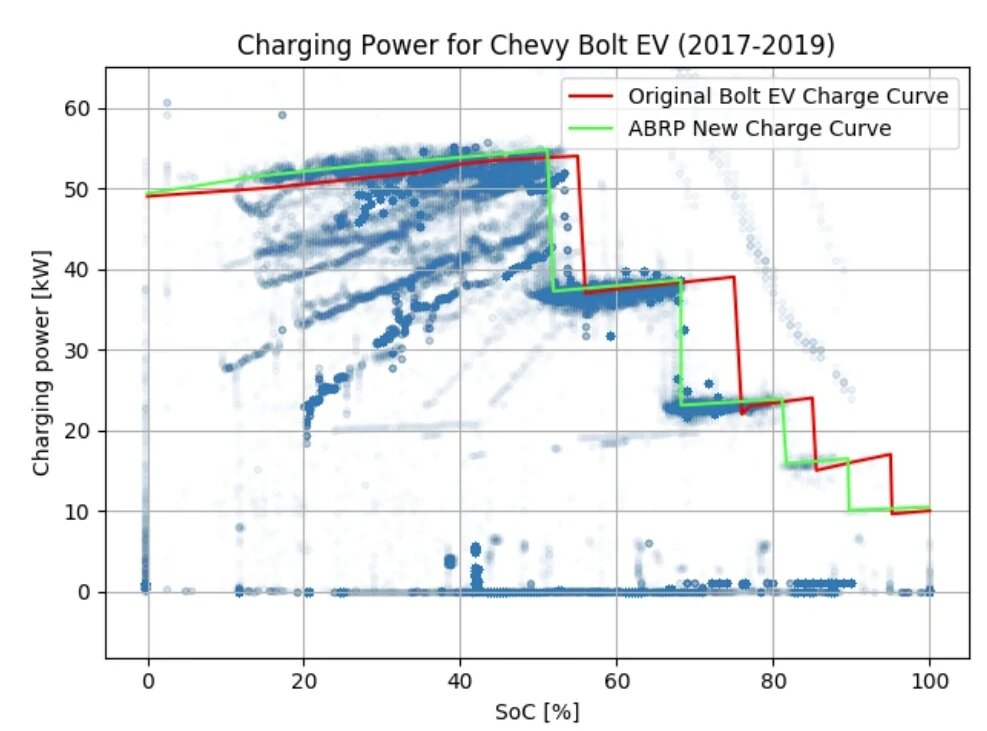
Деградация батарей электромобилей
https://prosto.energy/blogs/news/degradatsiya-batarey-electromobilya
Ёмкость батареи
Первый столбик. Данные с авто можно смотреть через всякие bluetooth-сканеры
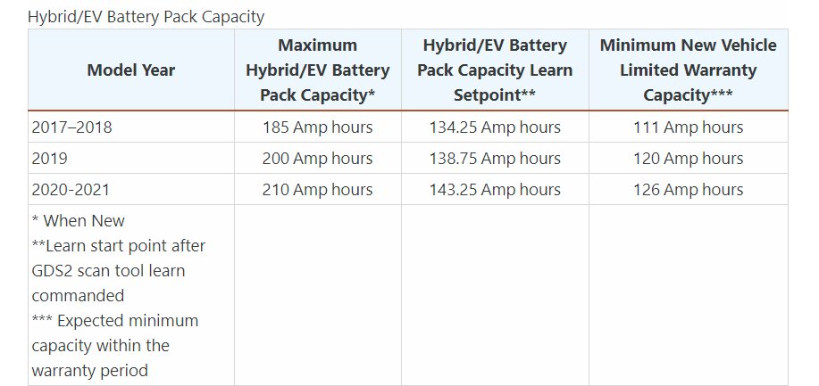
Зависимость расстояния Болт от скорости
На 5 миль в час меньше может означать на 10% больший запас хода.
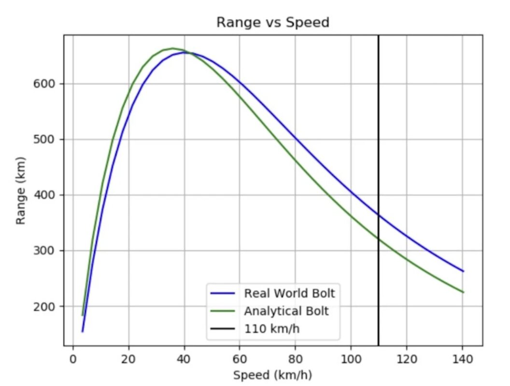
Зависимость расстояния Болт от Температуры
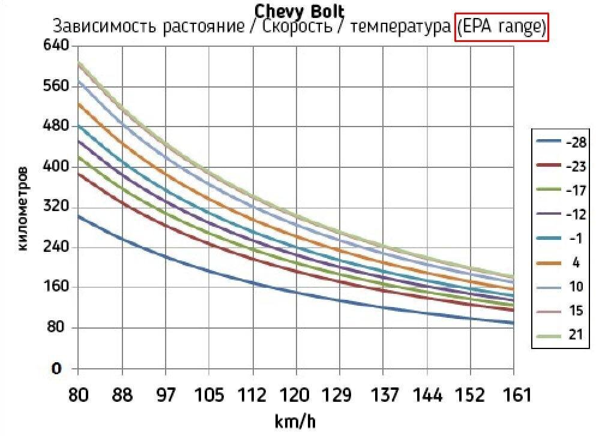
Расход кВт и расчёт по цене
Все электромобили приблизительно одинаково расходуют электричество. Поэтому важен размер батареи.
Excel онлайн калькулятор
Средний расход в кВт на 100км на Болтах:
- Летом в городе около 15кВт/100км (без кондиционера + стиль езды)
- Осенью в городе около 21кВт/100км (печка, щетки + стиль езды)
- Зимой около xxx кВт/100км (печка, щетки, подогрев батереи + стиль езды)
Ф-ла запаса хода = Эквивалент литров бензина =
❄️Зима
✿ Холодной зимой у вас будет на 40% меньше запас хода - это нормально.
✿ Перед отъездом используйте предварительную подготовку, чтобы помочь согреть аккумулятор и кабину, когда они подключены к электросети. Каждый запуск длится 20 минут
✿ Регенерация работает только на передних 2 колесах, и, хотя есть некоторая антипробуксовочная система и АБС, которые могут быть применены, следует проявлять осторожность при движении в L, когда это скользко.
✿ Предварительная подготовка кабины работает только в том случае, если вы оставите климат в автоматическом режиме
✿ В машине есть очень хорошая система терморегулирования, в том числе неплохая система охлаждения, которая использует кондиционер автомобиля.
✿ 260км с печкой по трассе при -10
✿ Подгорев охлаждающей жидкости - Греет до 15 если температура батареи опускается меньше 10
Активация климата и подогрева салона
А) Оставить включенным климат/печку
Б) выставить градусы
В) На брелочке нужно нажать кнопку закрытия 2 раза
Г) нажать 3-ю кнопку на брелке.
После включаются габариты автомобиля и активируется климат/подогрев
Большие морозы
Замерзла 🥶 -30 ощущается как -40. ночью было -36
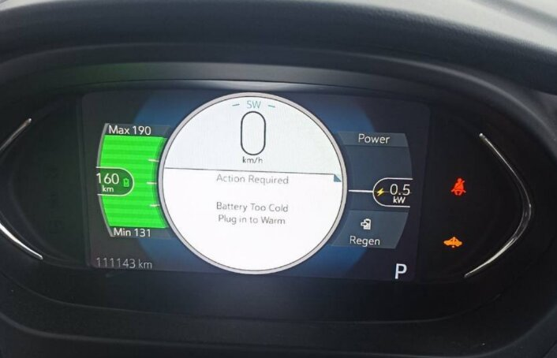
выходит, не греется она сама, если к шнурку не подключена
Я на даче ставил до похолодания с запасом хода 170 км. Утром при -26 стало 128. Подключил шнурок, за час стал пробег 150, за два вернулись 170 км.
Защита на днище (картера)
https://karter-market.ru/catalog/zashchita-kartera/chevrolet-2/bolt_2016_2021/
📱Медиа
Беспроводная зарядка в болтах поддерживает вот эти телефоны:
https://drive.google.com/file/d/1SQk_YB_aehkn6zOmdum2K5-ahIKHazj0/view
✿ В 2022 есть встроенная зарядка Qi и функция Wireless CarPlay.
✿ В 2017 году была зарядка «Qi», но пользователи iPhone X не могли заставить ее работать. Видимо модуль зарядки 2018 лучше.
Перезапуск медиасистемы
Удерживайте Home + FF (две кнопки справа от ручки громкости) 10 секунд. Это безопасно в любое время.
Быстрое переключение между Android Auto и штатной системой
удерживать кнопку "домик"
Прошивка на 17-й год - 14.5
https://www.chevybolt.org/forums/software-and-firmware-updates.509/
https://www.chevybolt.org/threads/what-is-in-14-5.26482/page-2
🖨️3D адаптер для крепления телефона
Печатается на 3Д, потом к нему крепится любая держалка для телефона
https://www.thingiverse.com/thing:3622061
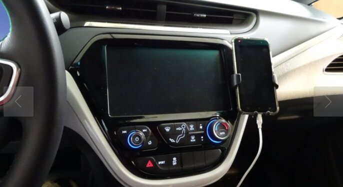
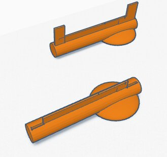
Альтернативный вариант на 3Д принтере:
шарик надо под каждую держалку подгонять внешний размер, замерять штангеном родной шарик у держалки, писать мне - я скину нужную модель
и держатель магнитного кабеля:
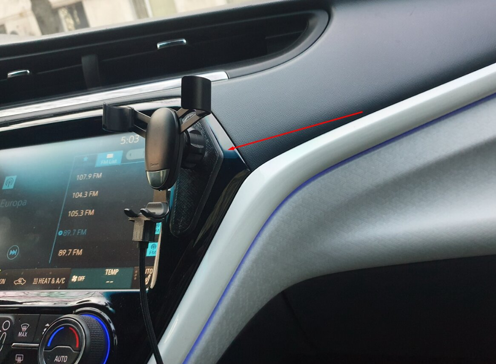
Держатель телефона в подстаканник
https://www.ozon.ru/product/avtomobilnyy-derzhatel-telefona-zegood-v-podstakannik-260414796
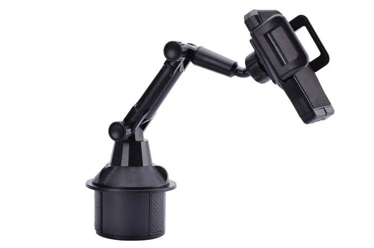
🛒Алиэкспресс
- Амортизатор Переднего Капота https://aliexpress.ru/item/4001345403740.html 31$
- Датчик давления в шинах TPMS 13598771 13598772 13586335 315 МГц 30$ | 25$
- Ключ 24$
- Прошивщик датчиков колес 7.25$
- Чехол для ключа 5$ | 11$ металл
- CarLink 36-53$
- ELM327 Bluetooth PIC18F25K80 5$
- Лампочки заднего хода Ссылка
🔧Локальный ремонт (контакты)
РБ:
- GMPROG Павел +375 33 3007954 — Прошивка и электрика (РБ и удаленно весь мир через ELM327)
- Замена порта, электрика и другое — Женя Добрыня Болт +375 29 8187849
- Зеркало сферическое, в том числе с лазерной гравировкой и подогревом - 80 рублей, по времени 20 минут. Малиновка 150 пав. 8 (029) 323-18-28
Украина:
Зарядки EnergyStar и продажа болтов Telegram @Manheim_UA
⚠️Проблемы
Аккумулятор (восстановление старого AGM)
На Драйв2 кто-то поднимал soh старого 12вольтового аккума, залив по 5 шприцов деонизированной воды. Там пробки под наклейкой.
Как поставить щетки в сервисное положение?
Нужно включить и выключить машину. Тогда, удерживая рычажок на себя щетки станут в сервисное положение.
Что первым умирает по подвеске?
Первыми на 70т умирают тяги стаба, потом на сотке большой сайлентблок. Потом на 150т рейка не у всех. Ну и как я понял на очереди амортизаторы передние и подшипники ступицы, но опять же не у всех, тк зависит от дорог.
Задние колодки
patron pbp289
Буксировка (из чатов)
- Буксировать с полностью разряженной батарей нельзя
- В режиме D куда угодно и сколь угодно (180км буксировки зарядилось на 150км)
- В режиме L только короткие дистанции
- В режиме N буксировать нельзя
Включение сервисного режима
Удерживать Start без тормоза на 5+ сек
Датчики слепой зоны
Если индикаторы боковой слепой зоны иногда отключаются или постоянный "светофор", это известная проблема - смотреть бюллетень 17-NA-097, чтобы наклеить дополнительную пленку для защиты датчиков.
https://static.nhtsa.gov/odi/tsbs/2017/MC-10139082-9999.pdf
Снимать бампер не нужно. Можно сделать из под бампера. Обклеили датчики двумя слоями фольги(без битума, обычная самоклеящаяся лента из строительного) и также нишу двумя слоями, как указано в отзывной выше. Все стало работать исправно и четко. Также можно посмотреть здесь https://t.me/chevybolt/2657
Отключить автоматическую блокировку дверей
Если и работает данный лайфхак, то максимум у 10% владельцев.
Нажмите и удерживайте кнопку внутренней разблокировки двери водителя в течение 3 секунд, чтобы отключить автоматическую блокировку
Скрежет при паркинге
Скрежет, который иногда слышен при переключении на парк, является нормальным явлением. Автомобиль, использует гидравлические тормоза для полной остановки автомобиля, при этом не будет никаких повреждений.
Ошибка Stabilitrak
Проверьте датчик абс, ту сторону где вам снимали колесо https://t.me/boltchevrolet/32959
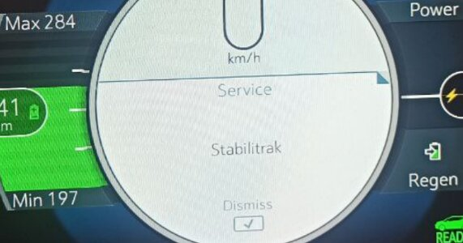
Скрип / лёгкий стук спереди
https://www.drive2.ru/l/483893419190518116/
Нужно менять кольца. Стоят между ступицей и шрусом, меняются просто
11611964 номер колец
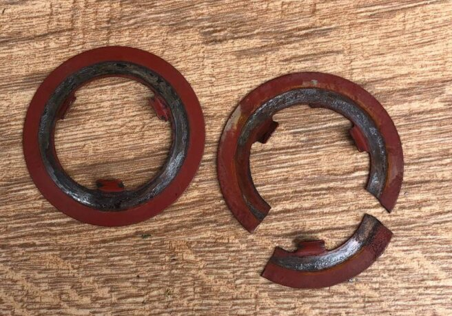
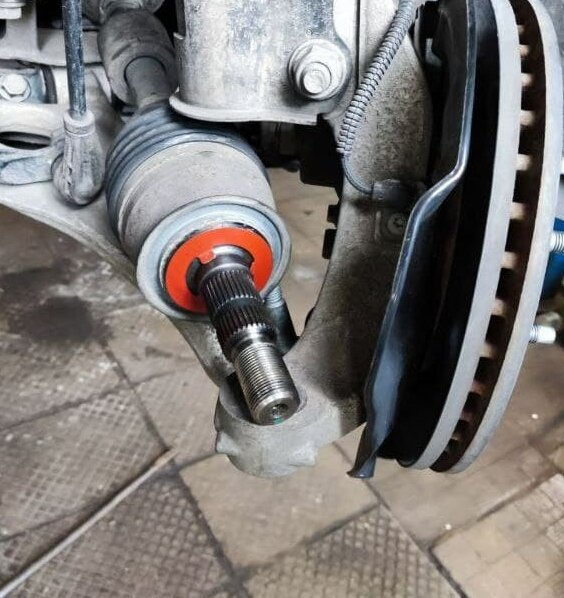
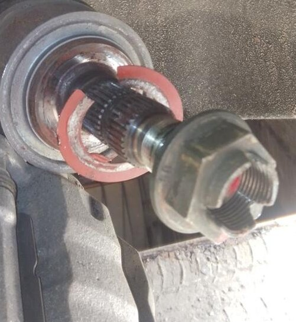
Ремонт скрипа подлокотника
Открутили нижнюю пластиковую крышку, под ней прижимная хрень на четырёх шурупах, она держит два ролика) демонтировали и вытягиваете основной подголовник двигая в сторону лобового стекла (вперёд)
Суть скрипов была в пустотности между всеми крышками... решил вопрос вот так…
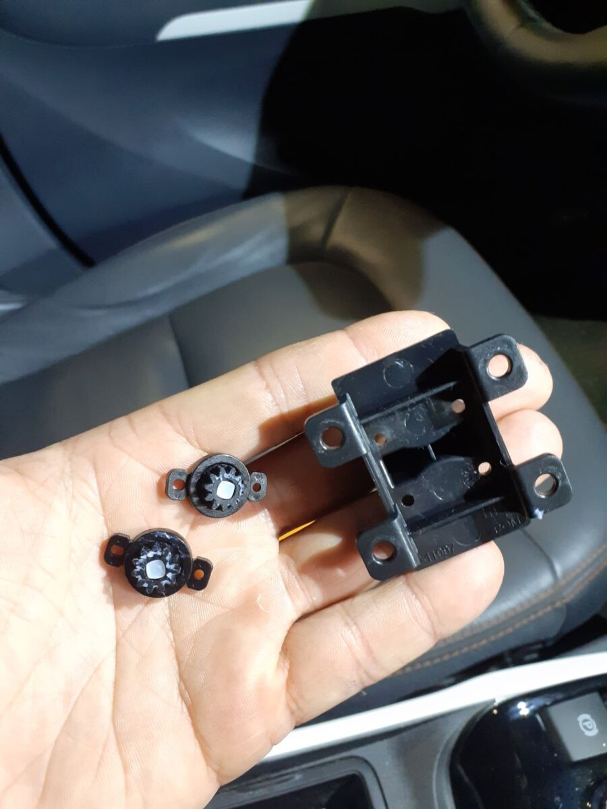
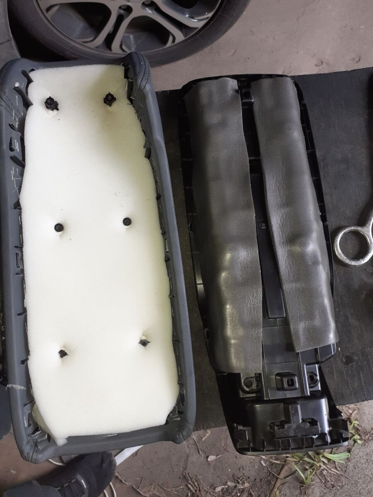
Собираем обратно в противоположной последовательности! Защелки хлипкие, два-три раза открыли и больше не держат!
Дребезжание заднего кресла
Там где петли - лента антискрип. Намотати на скобу, куди сидіння защіплюється
Крепление для шторки багажника
42363844
Здесь можно запросить 3D модель: https://www.chevybolt.org/threads/the-little-peg-on-the-lift-gate-that-lifts-the-cargo-cover-rear-lift-gate-trim-removal-3d-printed-replacement.37242/
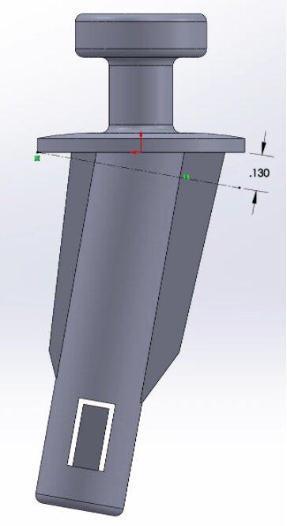
Крючок крышки багажника 3D
https://www.drive2.ru/l/590146099730208376/
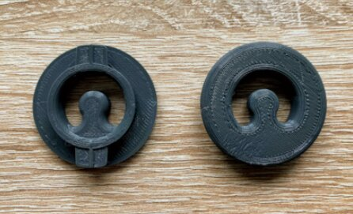
Улучшение сидений (добавление слоя листовой пены) АНГЛ
https://www.chevybolt.org/threads/front-seat-fix.13810/
Альтернативные сиденья от Mercedes
Mercedes W176 Сиденья Полуковши Спорт
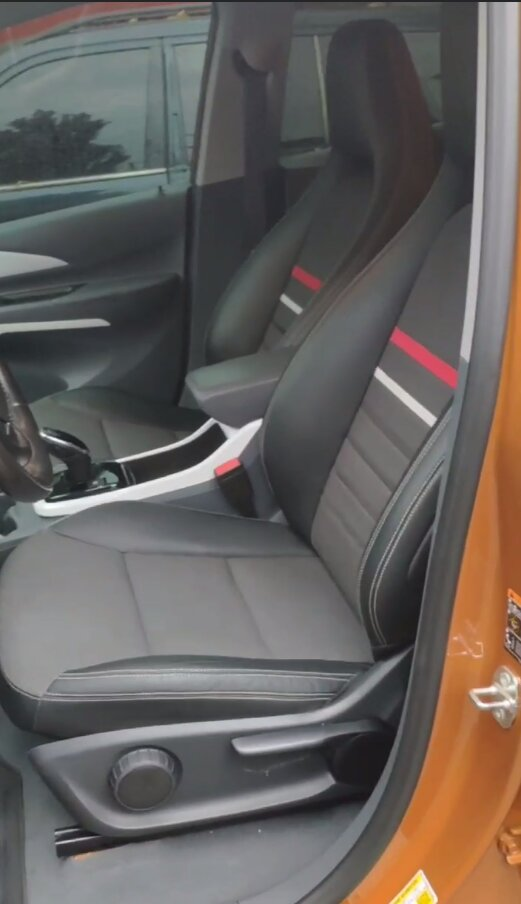
Включение автозакрытия дверей
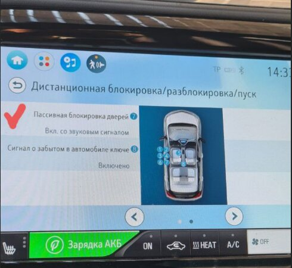
Замена головного света (ламп) на LED
Светодиодные лампы ALED X D3S XD3SD09 40w 6000K gen.3 для линз.
Вы довольны результатом?
На порядок лучше стало, но я очень требователен к свету, так что в перспективе буду ставить ХОРОШИЕ biled модули. Вместо штатных линз, например ams z8
Рулевые наконечники
42353793 это оригинал болта. В заменителях показывает только CEG-60 или CE0932
Характеристики:
- Длина 125 мм
- Резьба M12XP1,25
- Комплектация Включает гайки: да.
- Место установки снаружи
- Тип наконечника мама
- Размер резьбы осевого M14XP1,5
- шарнира Диаметр пальца 12,5
- Покатость конуса 1/6
Можно попробовать по характеристикам подобрать.
Как снять заглушку с USB-портами?
Нужно снимать подлокотник, и внутри отжимать белые пластмассовые защелки
https://t.me/boltchevrolet/35981
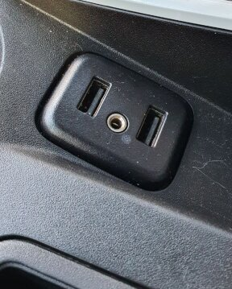
Как снять подголовник?
https://t.me/boltchevrolet/21008
Снятие плафона в потолке
https://t.me/boltchevrolet/18642
Не заряжает быстрая зарядка
Как правило, со стороны машины есть защелка (Серебристая, блестящая, выше порта немного), которая фиксирует разъем быстрый зарядки (который выставляете), по тем или иным причинам(например сломана защелка на разъеме) может не доходить, можно ей аккуратно помочь. Кто-то подкладывал окурок.
Не работает микрофон
Микрофон сидит на одном предохранителе с OnStar. Может сами или еще кто выдернул предохранитель OnStar.
Отключение динамика пешеходов
Динамик на внутренней стороне бампера слева. На болте, кнопка на экране не активная. Отключить в болте можно сняв предохранитель №34 под капотом. Ни на что больше №34 не влияет.
Блок предохранителей
в мануале (для Болт 2017 год) Страница 266
Капот:
Салон (слева от руля):
Лампочки освещения Chevrolet bolt:
Головной свет: d3s
Номер / салон: w5w / T10
Поворотники: wy21w / 7440a
Доп стопы: w21w / 7440r
Задний ход: w16w / T15 / 921
Перетирание кабеля под задним бампером
Перетирается проводка заднего бампера об задний усилитель, из-за этого машина может перестать ехать, либо пропадать системы помощи, ходовые огни, показание батареи, фантомные ошибки по airbag
Перестала работать камера в зеркале
От попадания влаги сгнивают контакты на фишке. За обшивкой двери. известная болячка болта...
Замена фильтра салона

Задний дворник (щетка)
Щетка обычная под крючок, длина 12 дюймов или 300 мм. Бескаркасную лучше не брать, крышка не встанет на место
Лампа подсветки в задний номер
Т10 W5W
Снаружи плафон сам отводиться в бок и достается вправо
Альтернатива датчика ABS
Датчик ABS от Chevrolet Cruze Номер датчика ST-13470637, подходит, нужно только переставить крепление со старого датчика + провод длиньше. Срезал со старого датчика крепления и поставил на новый. Датчик один в один.
Докатка
Докатка 115/70/16